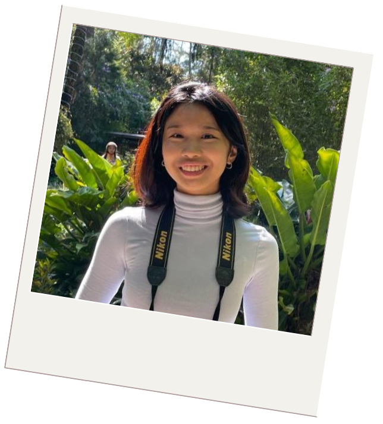
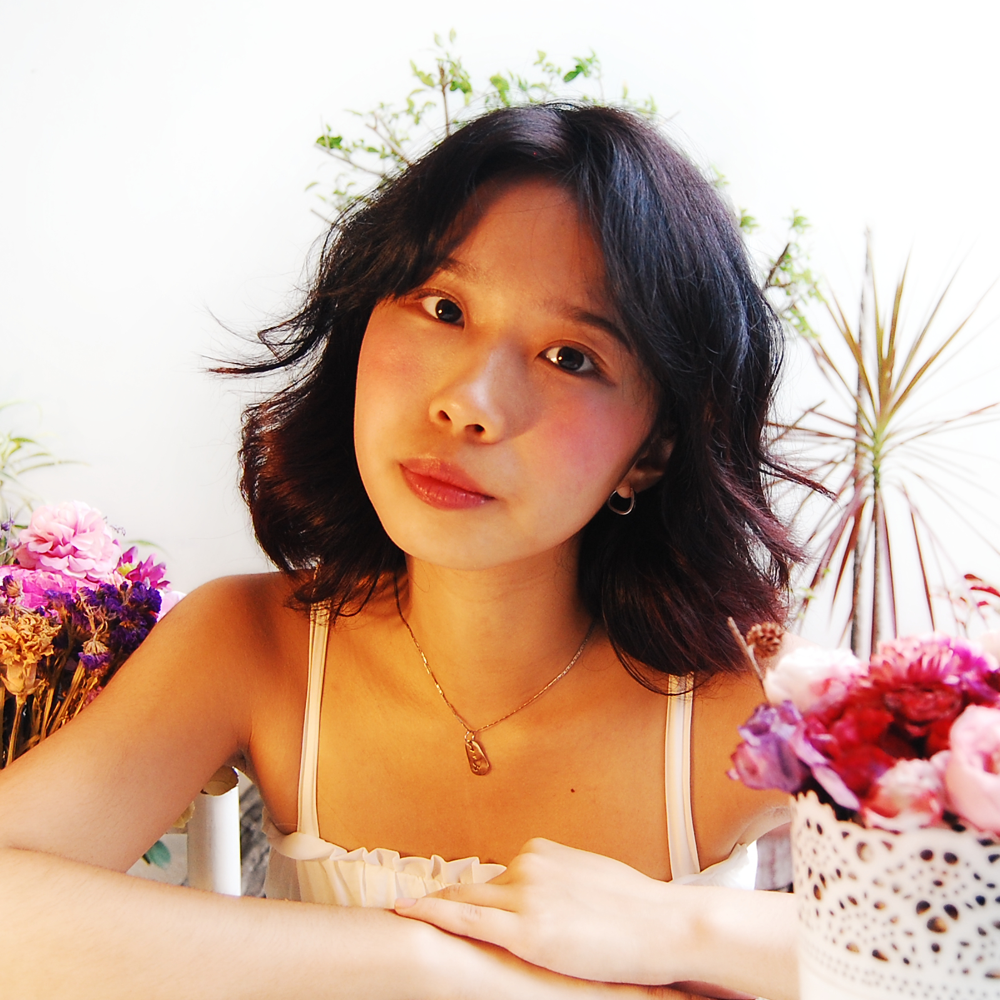
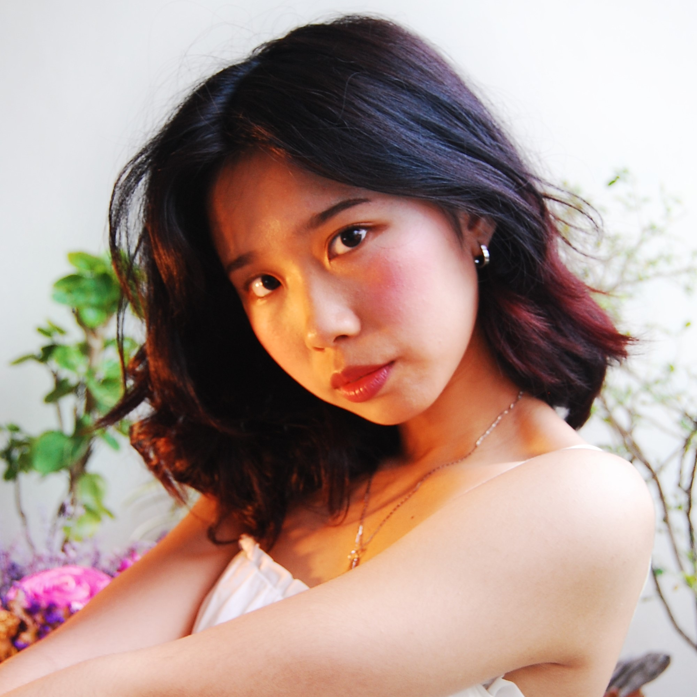
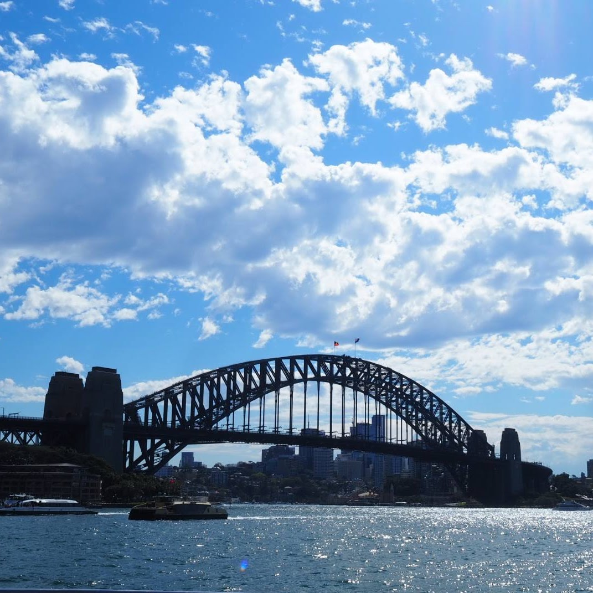
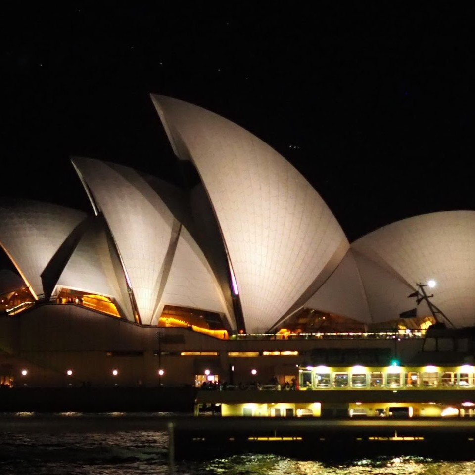
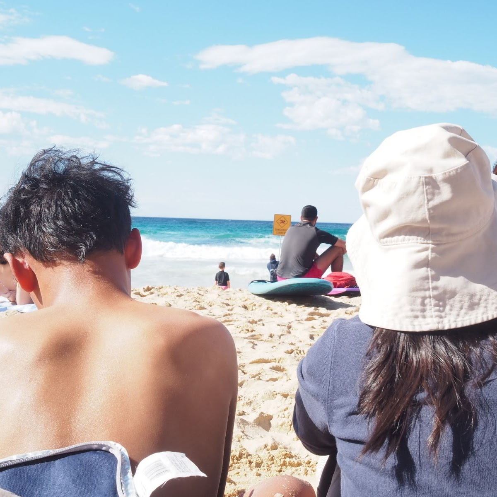
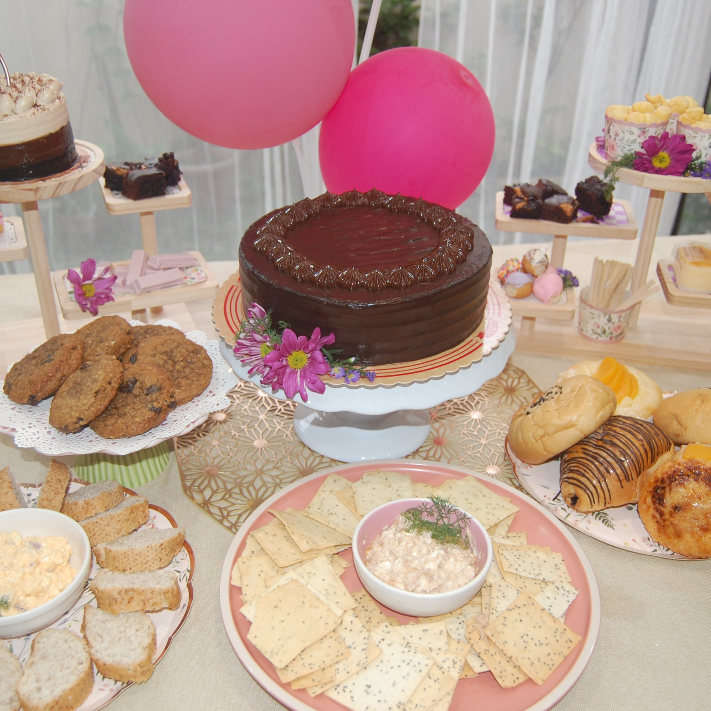
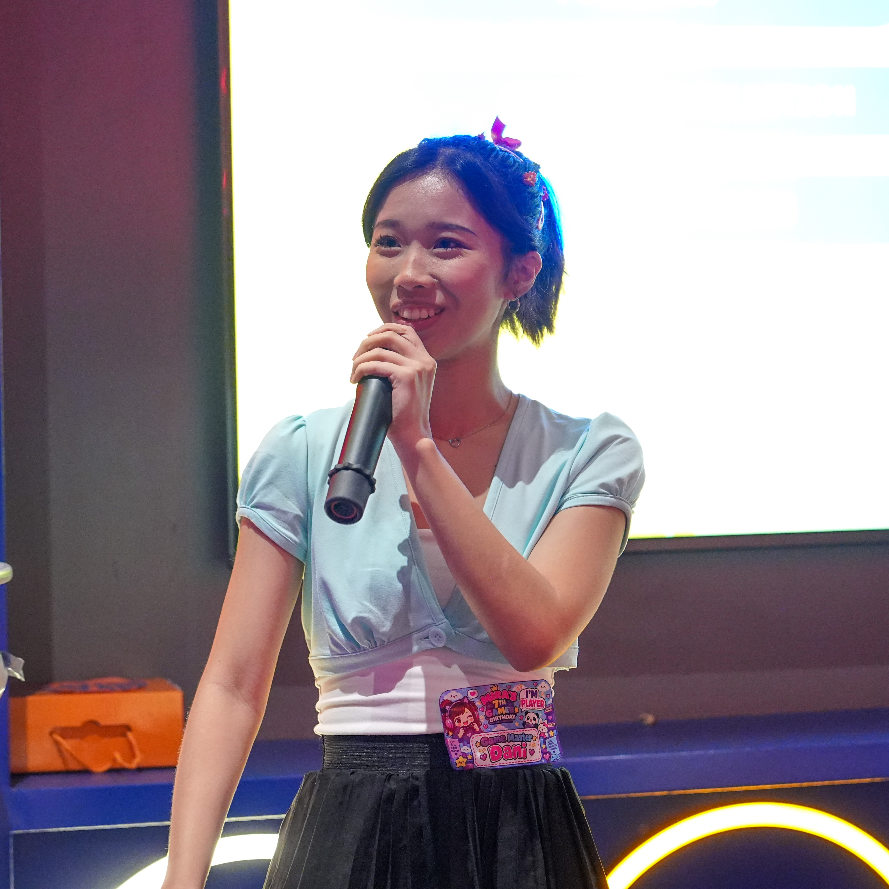
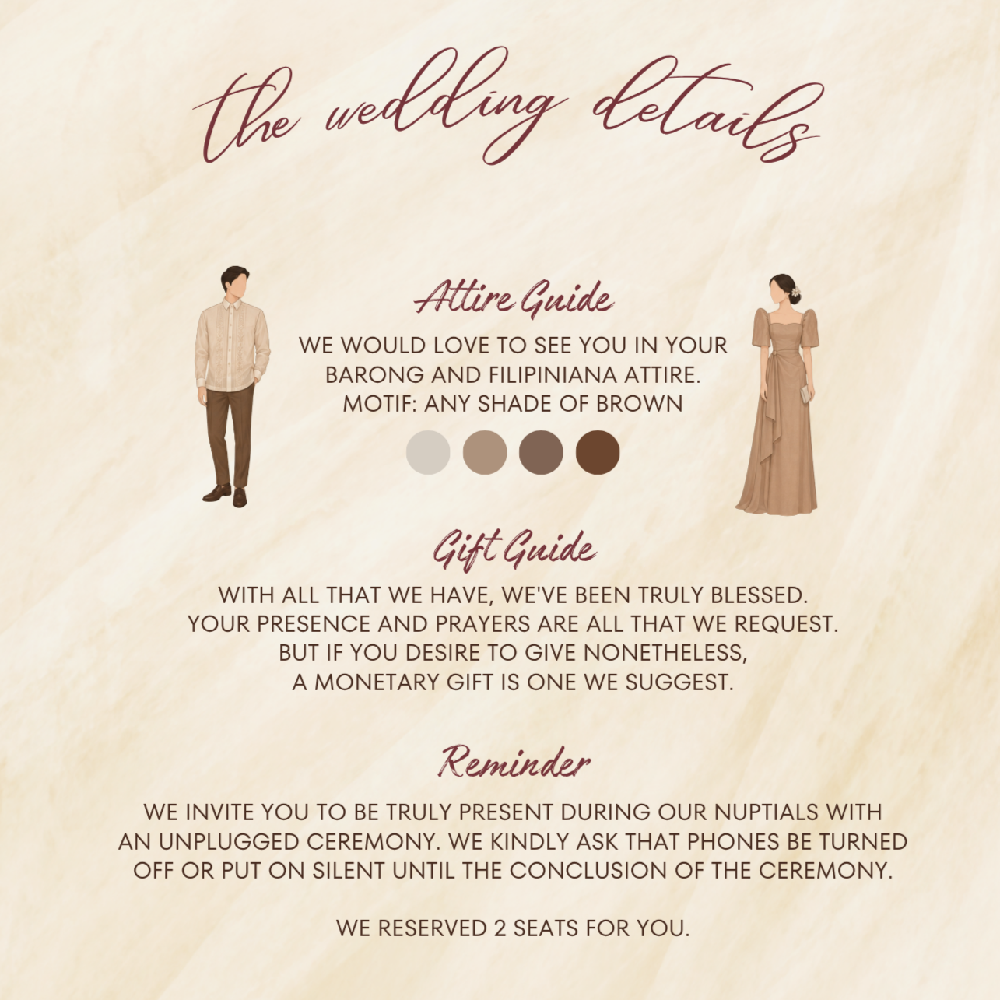

About Me ✩
I am currently a 3rd-year student in the Bachelor of Arts in Multimedia Studies (BAMS) program, which is offered at the University of the Philippines - Open University (UPOU). As someone who remains dedicated to her studies while being enthusiastic about her own interests, I possess skills of reliability, resilience, and versatility needed to excel in different fields. Although most of my passions revolve around multimedia production and the arts, I am eager to hone proficiency in both personal and professional pursuits beyond this scope. Ultimately, I constantly strive to challenge myself by venturing into the unknown, because I believe that growth begins with every new experience that awaits!
Things I Love
- Photography
- Video Editing
- Graphic Design
- Web Development
- Reading Books
- Binge-watching Movies
- Traveling
Passion Projects
- Self-Portrait Photography (April 20, 2026): A creative expression of identity through the art of lighting, composition, and visual storytelling.


- Australia Photo Diary (June 11, 2024 - September 10, 2024): A personal keepsake of adventures in New South Wales, Australia.



- Event Management and Production (2023 - Present): An initiative focused on organizing special events, such as birthdays and holiday gatherings, through meticulous planning of goals, participants, venues, logistics, and activities.


